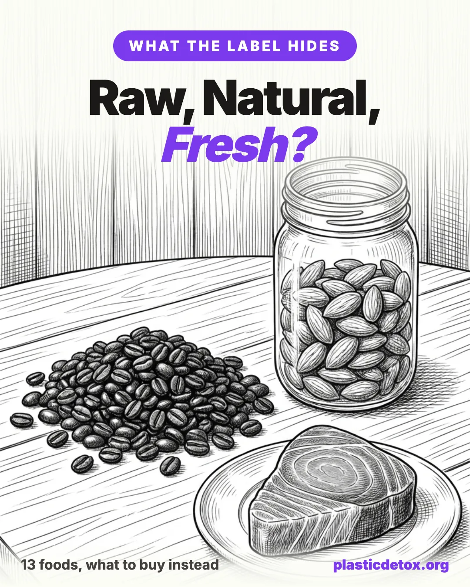

Raw, Natural, Fresh: The Hidden Food Processing Labels Don't Mention (2026)

The 30 Second Summary
- Raw, natural, and fresh routinely hide one processing step. The cleaner version is usually real, but it is specific to each food, not one blanket rule.
- Buy organic where the win is built in. Organic legally blocks potassium bromate, ethylene oxide on spices, sulfites on dried fruit, and post harvest fungicides on citrus, all in one move.
- Imported is not automatically better, and for shrimp it is worse. Most banned antibiotic refusals at the US border are imported farmed shrimp.
- Some popular fixes are oversold. Raw cashews cannot exist, farmed salmon is not dyed by injection, and switching to pink salt does not solve microplastics.
- Skip the solvent in your decaf. Choose Swiss Water Process decaf or carbon dioxide process, never methylene chloride.
- The one page cheat sheet below lists every food, its hidden step, and exactly what to buy. Screenshot it.
The bag said raw. It wasn't.
Almost every almond you buy in the United States has been heat treated or fumigated before it reached the shelf, and it can still legally be sold as raw. After two Salmonella outbreaks traced back to raw almonds, a USDA marketing order made pasteurization mandatory for California almonds, which are close to the entire domestic crop. Compliance became mandatory on September 1, 2007. The approved methods are steam, roasting, or fumigation with propylene oxide, a chemical that California lists as a carcinogen and that leaves a residue called propylene chlorohydrin. None of that is roasting, so the nuts are still called raw.
This is the pattern this guide is about. The words raw, natural, and fresh routinely hide a processing step, and once you know which step belongs to which food, you can buy around it. The good news is that a genuinely cleaner version almost always exists. The catch is that the cleaner version is specific to each food. There is no single rule that fixes all of them at once. So we sorted every food below by how much the swap is worth your attention, and we were just as careful to flag where the popular advice is oversold or where no clean version exists at all.
1. Why Organic, Imported, or From a Farmer Is Not One Rule
People reach for three mental shortcuts when they want cleaner food: buy organic, buy imported, or buy direct from a farmer. Each one helps for some foods and does nothing for others. Treating any of them as a universal rule is exactly how you end up paying more without lowering your exposure.
Organic does the most heavy lifting, because the standard is a list of what is allowed, and several of the worst processing steps in this article are simply not on that list. Buying certified organic blocks potassium bromate in flour, ethylene oxide sterilization on spices, sulfites on dried fruit, and synthetic post harvest fungicides on citrus, all at once. That is four hidden steps removed by one label, which is why organic shows up again and again below.
Buying direct from a farmer helps for the specific things a small grower controls, like skipping the wax and fungicide on an apple, or selling you genuinely untreated almonds, which California growers are allowed to do in small quantities straight to the customer. It does nothing for a problem that happens at a processing plant downstream.
Imported is the one that flips direction. It buys you nothing here automatically, and for one food it is actively worse. Most of the banned antibiotic violations the FDA catches at the border are on imported farmed shrimp. So "imported" is not a quality signal in this article. Where the source country matters, we say so by name.
2. The High Diligence Five
These five are the ones worth real attention. In each case the swap is easy, it pays off, and you probably eat the food often. This is where your effort goes furthest.
Almonds
As above, almonds sold as raw in the US have almost always been pasteurized. The two methods that keep them sellable as raw are steam and propylene oxide fumigation. Propylene oxide is classified by the International Agency for Research on Cancer as possibly carcinogenic to humans, a rating based on animal studies and mainly an inhalation concern for workers, and it leaves a residue called propylene chlorohydrin that the EPA regulates with its own tolerance. It is not something you want by default, even if the dietary risk is modest.
What to buy: certified organic almonds, which cannot be fumigated with propylene oxide and are steam treated instead. If you want genuinely untreated nuts, buy directly from a California grower, who is allowed to sell unpasteurized almonds in limited quantities, or look for imported almonds, which are exempt from the rule.
Three easy picks. NOW Foods and Burroughs are certified organic, so they are steam pasteurized and never see propylene oxide. Terrasoul goes one step further and is genuinely unpasteurized, raw enough to sprout.

NOW Foods Certified Organic Almonds
Certified organic, raw and unsalted almonds. Organic, so steam pasteurized rather than fumigated with propylene oxide. Widely available.
View →
Terrasoul Superfoods Raw Almonds
Organic, raw, unpasteurized almonds from Spain. Never heated, steamed, irradiated, or chemically sterilized, so they still sprout.
View →
Burroughs Family Farms Organic Almonds
Regenerative Organic Certified almonds grown in California. Organic, so steam pasteurized, never propylene oxide. 3 lb bag.
View →Grains, Flour, and Bread
There are two separate threads here. The first is glyphosate used as a pre harvest desiccant, sprayed on wheat, oats, and barley to dry the crop evenly before harvest. It leaves residue that carries through into flour, cereal, and bread. The Environmental Working Group has found glyphosate in nearly all conventional oat products it tests, though usually well below the legal limit, and it is worth noting the residues are commonly detected rather than commonly over the limit.
The second thread is dough and flour additives, and here honesty matters, because not all of them are equal. Potassium bromate is the one to avoid. It is an oxidizer that IARC rates as possibly carcinogenic to humans, it has been banned in the European Union since 1990 and in Canada, India, Brazil and others, yet it is still legal at the US federal level at up to 75 parts per million of flour. California passed a ban that takes effect in 2027. Azodicarbonamide, a dough conditioner banned in the EU and Australia but legal in the US, breaks down during baking into semicarbazide, a weak animal carcinogen. But ascorbic acid, which is just vitamin C, and baking enzymes are benign and belong in a completely different bucket. Seeing "dough conditioner" on a label is not automatically a problem. Bromate and azodicarbonamide are.
What to buy: for the additives, certified organic flour and bread prohibit both bromate and azodicarbonamide, or read the label and skip those two names. For the glyphosate residue, organic helps but is not a full guarantee, because the desiccant can drift onto organic crops too. The reliable choice is flour and bread certified glyphosate residue free, which is third party tested for the residue itself. For more, see our glyphosate detox guide.
Three picks that cover the whole section: a sprouted bread with no dough additives, a grain tested for glyphosate residue, and a flour that is certified residue free and unbromated.

Food For Life Ezekiel 4:9 Sesame Bread
Organic sprouted whole grain bread, no flour, no added sugar, and no dough conditioners. Made from sprouted wheat, barley, and legumes. 24 oz, sold frozen.
View →
One Degree Organic Sprouted Oats
Organic sprouted rolled oats, tested for glyphosate residue. Sprouted whole grain, gluten free, no desiccant residue. 5 lb bag.
View →
Palouse Brand Bread Flour
Whole wheat bread flour, certified glyphosate residue free, unbleached, unbromated, and non irradiated, with no additives. 3 lb bag.
View →Ground Spices and Dried Herbs
Ground spices and dried herbs are frequently sterilized with ethylene oxide gas to kill Salmonella and other pathogens. Ethylene oxide is one of the few food related chemicals that IARC places in Group 1, carcinogenic to humans, and the treatment leaves a residue, ethylene chlorohydrin, that lingers in the spice. The US allows the practice with set tolerances. The European Union does not authorize it at all, which is why a 2020 and 2021 wave of contaminated sesame and spice imports triggered thousands of recalls across Europe.
What to buy: certified organic spices and dried herbs, which cannot be gas sterilized and use a non chemical method such as steam instead. Single origin specialty brands are another route, since they sell fresh, traceable spices rather than commodity stock.
Three picks, from the budget organic jar to single origin specialty brands:

Simply Organic Ground Cumin
USDA organic ground cumin in a glass jar. Organic, so steam sterilized rather than treated with ethylene oxide. 2.31 oz.
View →
Burlap & Barrel Umami Steak Seasoning
Single origin steakhouse blend with garlic, shallot, and pepper, sourced directly from farms rather than commodity supply. Traceable to source.
View →
Diaspora Co Pragati Turmeric
Single origin heirloom turmeric from India, direct trade and lab tested for lead and contaminants. Fresh harvest, high curcumin.
View →Dried Fruit
Light colored dried fruit like apricots, golden raisins, mango, and pineapple is usually treated with sulfur dioxide and sulfites to stop it from browning and to keep that bright, almost neon color. Sulfites are not a problem for most people, but they trigger reactions in sulfite sensitive individuals, especially asthmatics. The FDA estimates around 5 percent of asthmatics may react, and requires sulfites to be declared on the label at 10 parts per million or more.
What to buy: organic dried fruit, which is unsulfured. The visual tell is simple. Unsulfured apricots are brown, not bright orange, because the color is allowed to oxidize naturally. Unsulfured dried apricots look duller and that is exactly the point.
Conventional Citrus and Apples
After harvest, conventional citrus and apples are commonly treated with fungicides such as imazalil, thiabendazole, and fludioxonil, often applied right in the wax coating that makes the fruit shine. These are surface treatments that sit on the peel. When citrus is peeled, only around 7 percent of imazalil residue is left in the flesh, which tells you almost all of it stays on the rind. That matters most when you zest, because zesting scrapes the most heavily treated layer straight into your food.
What to buy: organic citrus and apples, which prohibit these synthetic post harvest fungicides, especially if you zest. If you are using conventional fruit, peel it and do not zest it, since the residue is concentrated in the peel.
3. Worth It If You Actually Eat It
These swaps have a clear action and a real payoff, but a narrower audience. If you drink decaf daily or eat a lot of shrimp, this section is for you. If you do not, you can skim it.
Decaf Coffee
Some decaffeinated coffee is made by washing the beans with methylene chloride, also called dichloromethane, the same solvent found in paint strippers. The FDA caps residue in finished coffee at 10 parts per million, and in practice measured levels are usually far below that ceiling, so this is not a panic. But there is no reason to drink a solvent when clean methods exist, and an Environmental Defense Fund petition filed in January 2024 has asked the FDA to revoke its approval for methylene chloride and three other solvents.
What to buy: coffee labeled Swiss Water Process, which is water based, or carbon dioxide process, which uses pressurized CO2. Both are free of chemical solvent. Ethyl acetate decaf is sometimes marketed as natural, but it is still a solvent method and the ethyl acetate can be petroleum derived, so it is a step below the first two.
If you want to go a step further than the label, these three brands actually publish lab results. All three are Swiss Water decaffeinated, and each one posts third party testing for the things that matter most in coffee: mold, mycotoxins, pesticides, and heavy metals.

Purity Coffee Calm Decaf
Swiss Water decaffeinated, USDA Organic, regeneratively farmed. Publishes full Certificate of Analysis reports for mold, mycotoxins, pesticides, and heavy metals.
View →
Natural Force Clean Decaf
Swiss Water decaffeinated, USDA Organic. COAs run through Eurofins to ISO 17025, covering mold, mycotoxins, yeast, acrylamide, heavy metals, and pesticides.
View →
Biodynamic Coffee Decaf
Swiss Water decaffeinated, Demeter Certified Biodynamic farm, which prohibits synthetic pesticides at the source. Every harvest is third party tested for mycotoxins, with ochratoxin A and aflatoxins below the detection limit.
View →Tea Bags
Many premium pyramid and silky mesh tea bags are made from nylon or PET plastic, and you pour near boiling water straight onto them. A 2019 McGill University study reported that a single plastic tea bag steeped at 95 degrees Celsius released roughly 11.6 billion microplastic particles and 3.1 billion nanoplastic particles into one cup. The exact count has been questioned by later researchers, who argue it may be overstated, but the core finding stands: plastic tea bags shed far more plastic into your cup than almost any other food. Even compostable mesh bags made from PLA are not exempt, as they also shed particles when steeped.
What to buy: loose leaf tea with a stainless steel infuser, or tea in plain unbleached paper bags. Our guide to microplastics in tea covers the cleanest brands and brewing tips.
The loose leaf setup we recommend: an everyday organic tea, a variety sampler, and the infuser to brew them with no plastic in the path.

Rishi Organic Loose Leaf Tea
Organic loose leaf tea in a recyclable tin. No tea bag, so no plastic in the cup. Available across black, green, oolong, and herbal blends.
View →
Vahdam Loose Leaf Tea Sampler
Loose leaf sampler across green, black, herbal, and chai. Vacuum sealed in recyclable packaging, no bags. Good way to find what you like.
View →
Forlife Stainless Steel Infuser
Extra fine 18/8 stainless steel brew in mug infuser with lid. No plastic in the brewing path, fits most mugs and teapots.
View →Imported Farmed Shrimp
Imported farmed shrimp carries three hidden issues. It is often treated with sodium tripolyphosphate to bind water and add weight, so you pay for water. It is frequently treated with sodium bisulfite to prevent black spot, the same sulfite concern as dried fruit. And it carries genuine antibiotic resistance concerns. The FDA maintains import alerts for banned antibiotics like nitrofurans and chloramphenicol, and refuses shrimp shipments over them, with India and Indonesia accounting for most of the recent refusals. Notably, a large share of the refused shipments in 2026 came from facilities that were certified, which undercuts the idea that a certification label guarantees clean shrimp.
US law does require these treatments to be disclosed, sulfites at 10 parts per million or more and added phosphates and water by name, so the real world problem is mislabeling and weak enforcement on imports rather than a total absence of rules.
What to buy: wild caught domestic shrimp, such as US Gulf shrimp, which is not farmed with antibiotics. Note that domestic shrimp can still be sulfite treated, so check for that separately.
Fresh Tuna
Some fresh tuna, and occasionally other fish like tilapia, is treated with carbon monoxide, marketed as tasteless smoke or filtered wood smoke. The gas binds to the myoglobin in the flesh and locks it into a bright cherry red that stays vivid even as the fish ages and loses freshness, which means the color can mask spoilage. That is a real safety issue, because tuna that smells fine but has aged can cause scombroid poisoning. The treatment is allowed in the US but is not permitted in the European Union, Japan, or Canada.
What to buy: avoid tuna that is an unnaturally uniform, too bright red. Real tuna varies in color and dulls as it ages. Buy from a counter you trust, ideally previously frozen and clearly sourced. Canned tuna is a separate cooking process and is not affected by this.
Canned Foods
This is the packaging story. Can linings have historically been epoxy resins made with BPA, and BPA leaches more from acidic foods like tomatoes. The catch is the label trap. Many makers switched to linings made with BPS or BPF, alternatives with limited safety data that a 2015 systematic review found are about as hormonally active as BPA itself. So "BPA free" is not a guarantee of safety, it just means a different bisphenol or coating.
What to buy: foods in glass jars, especially acidic foods like tomatoes in glass, or brands that publish what their liners are actually made of. One caveat: metal lids on glass jars can still contain a bisphenol based gasket, so glass is better but not always perfect. Our deep dive on why BPA free is not safe explains the substitution problem in full.
4. Do Not Fall for the Fix
This is where most clean eating guides go wrong. Some popular fixes are oversold, and for a few foods there is no cleaner version to chase at all. Knowing where to stop is as valuable as knowing where to act.
Cashews
There is no such thing as a truly raw cashew, and that is fine. The cashew shell contains urushiol related compounds, the same caustic chemical family as poison ivy and poison oak. Getting the kernel out safely requires heat, either roasting in the shell or steaming, which both crack the shell and neutralize the toxic oil. So every cashew you have ever eaten, including the ones labeled raw, has been heat treated. This is reassurance, not alarm. There is no cleaner cashew to hunt for, because the steaming is what makes the nut safe to eat in the first place.
Farmed Salmon Color
Farmed salmon is not injected with dye. The color comes from astaxanthin added to the feed, which the fish deposit into their muscle exactly the way wild salmon do when they eat krill and shrimp. The astaxanthin used in farming is usually synthetic and petrochemically sourced, but it is chemically the same molecule as the natural pigment, not a cosmetic dye. In the US, farmed salmon carries a "color added" label, which refers to that feed pigment, not an injection.
The real wild versus farmed question is about contaminants and feed, not color, and even that has shifted. As salmon feed moved from marine oils to plant oils, today's farmed salmon often tests lower in contaminants like dioxins and mercury than wild, while also delivering less omega 3. The honest takeaway is a genuine tradeoff, not a simple "farmed is poison."
Salt
Microplastics are nearly universal in salt. The most cited study, Kim and colleagues in 2018, tested 39 brands and found sea salt highest, from 0 to about 1,674 particles per kilogram in normal samples, with rock and mined salt lowest at 0 to 148. So mined salt is lower, but it is not zero, and the broader literature is inconsistent because labs use different methods. More importantly, salt is a tiny part of total microplastic exposure compared with water, air, and other foods.
That makes "just switch to pink Himalayan or mined salt" an oversold fix. It trades a tiny microplastic reduction for a different problem: independent testers have flagged popular mined salts, including Redmond Real Salt, for heavy metals like lead and arsenic from the source rock, and pink salts often test higher in metals, not lower. The absolute doses are small, but the point stands. Mined is not reliably cleaner. Any salt worth trusting needs published, product specific lab testing, not a marketing story about ancient sea beds.
5. The One Page Shopping Cheat Sheet
Here is the whole article in one scannable table. Each row is a food, the step hidden behind its label, and exactly what to buy instead. Screenshot it for the grocery store.
| Food | The hidden step | What to buy |
|---|---|---|
| Almonds | "Raw" is steamed or propylene oxide fumigated | Organic (steam only), or direct from a CA grower |
| Flour and bread | Glyphosate desiccant residue, plus potassium bromate or azodicarbonamide | Glyphosate residue free certified, plus no bromate or azodicarbonamide on the label |
| Ground spices | Ethylene oxide gas sterilization | Organic (steam sterilized) |
| Dried fruit | Sulfur dioxide and sulfites for color | Organic, unsulfured (brown, not neon) |
| Citrus and apples | Post harvest fungicide in the wax | Organic, or peel and do not zest |
| Decaf coffee | Methylene chloride solvent | Swiss Water Process or CO2 process |
| Tea bags | Plastic mesh sheds billions of particles | Loose leaf with a steel infuser, or paper bags |
| Shrimp | Added water, sulfites, banned antibiotics (imported farmed) | Wild caught domestic |
| Fresh tuna | Carbon monoxide "tasteless smoke" masks aging | Avoid unnaturally bright red; canned is fine |
| Canned foods | BPA, BPS, or BPF can linings | Glass jars, especially for acidic foods |
| Cashews | Always steamed (urushiol). No raw version | Relax. There is nothing to fix |
| Farmed salmon | Astaxanthin in feed, not injected dye | Choose on contaminants and omega fats, not color |
| Salt | Microplastics nearly everywhere; mined not reliably cleaner | A brand with published product specific testing |
6. How We Vetted This
7. FAQ
Are raw almonds actually raw?
Almonds grown in California, which is nearly all of the US crop, must be pasteurized before sale under a USDA marketing order that took mandatory effect on September 1, 2007. The treatment is steam, roasting, or propylene oxide fumigation, yet the nuts can still be labeled raw because they are never roasted for flavor. Organic almonds cannot use propylene oxide and are steam treated instead. Truly untreated almonds are still legal to buy directly from California growers in small quantities, and imported raw almonds are exempt.
Is decaffeinated coffee bad for you?
It depends on how it was decaffeinated. Some decaf is made with methylene chloride, the same solvent used in paint strippers. The FDA caps residue at 10 parts per million and measured levels are usually far below that, but an Environmental Defense Fund petition filed in January 2024 has asked the FDA to revoke its approval. To skip the solvent entirely, choose coffee labeled Swiss Water Process or carbon dioxide process.
Does farmed salmon have dye injected into it?
No. Farmed salmon is not injected with dye. The pink color comes from astaxanthin added to the feed, which the fish deposit into their muscle exactly as wild salmon do from eating krill and shrimp. Most farmed astaxanthin is synthetic, but it is chemically the same molecule. The color added label on US retail salmon refers to the feed pigment, not an injection.
Is potassium bromate banned in the United States?
No. Potassium bromate, a flour additive that IARC classifies as possibly carcinogenic, is banned in the European Union, Canada, India, Brazil and others, but it is still legal federally in the US at up to 75 parts per million of flour. California passed a law in 2023 banning it statewide from 2027. To avoid it elsewhere, choose certified organic bread and flour, where it is prohibited, or read the ingredient list.
Is pink Himalayan or mined salt cleaner than sea salt?
Not reliably. Mined and rock salt tend to contain fewer microplastics than sea salt, but salt is a tiny part of microplastic exposure overall, and independent testing has found pink and mined salts can carry as much or more lead and arsenic as sea salt because of the source rock. Any salt worth trusting needs published, product specific lab testing, not a marketing story.
Why is some fresh tuna so bright red?
Some fresh tuna is treated with carbon monoxide, marketed as tasteless smoke, which locks the flesh into an unnaturally uniform cherry red that can persist even as the fish ages. The treatment is allowed in the US but not permitted in the European Union, Japan, or Canada. The tell is color that is too bright and too even. Canned tuna is a separate process and is not affected.
Related Articles
- Plastic in Groceries: What Really Matters (2026)
The packaging companion to this guide. Which foods absorb the most plastic from their wrapping, and which to stop worrying about. - The Glyphosate Detox Guide (2026)
Goes deep on the pre harvest desiccant residue in grains, oats, and bread, and how to lower your exposure. - Food and Pesticides 101 (2026)
Where organic actually pays off, where it does not, and how to read residue data without the fear. - Why BPA Free Is Not Safe (2026)
The full story on the can lining label trap and why BPS and BPF are not the upgrade they sound like. - How to Avoid Microplastics in Tea (2026)
The cleanest loose leaf and paper bag brands, plus why even compostable mesh bags shed plastic. - Low Tox Myths Debunked (2026)
More oversold fixes, in the same honest spirit as the "do not fall for the fix" section above.